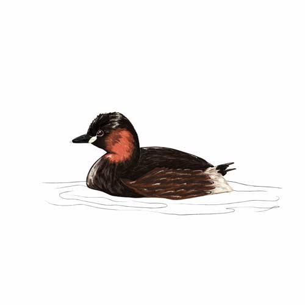

Little Grebe
Description
-

- All year
- Ponds & Water

- Medium (28cm)
Spotting Tip
Tree Sparrows are distinguishable by their brown cap on their head and shorter tail. Slightly smaller than the House Sparrow, Tree Sparrows have black on their chins like male House Sparrows.